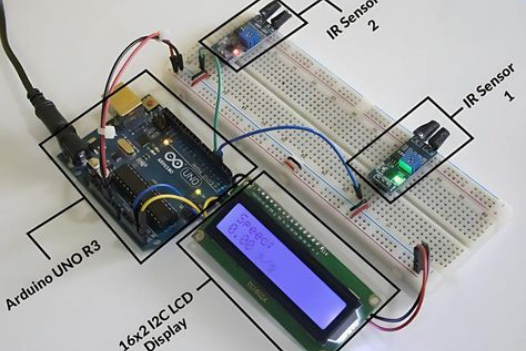

Pour débuter
Arduino Uno
La carte des debutant qui veulent apprendre l'électronique.
Arduino UNO R3
Écran LCD 16x2
2 capteurs infrarouges (IR)
Breadboard
Résistances
Fils Dupont
Composant de l'appareil
- Processeur ATmega328P – 8 bits, 16 MHz
- RAM 2 Ko
- stockage 32 Ko Flash
- Memoire EEPROM 1 Ko
- Alimentation USB 5 V